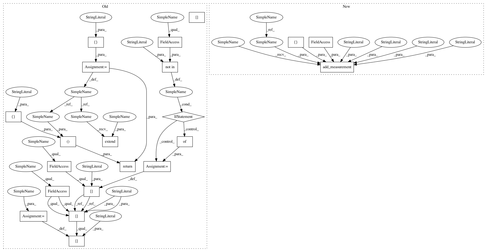

bed3f1ebd41020f9bbd31ba30b78902775eddbc8,plantcv/plantcv/morphology/segment_angle.py,,segment_angle,#Any#Any#,14
Before Change
// Calculate degrees from slopes
segment_angles.append(np.arctan(slope[0]) * 180 / np.pi)
angle_header = ["HEADER_ANGLE"]
angle_data = ["ANGLE_DATA"]
for i, cnt in enumerate(objects):
// Label slope lines
w = label_coord_x[i]
h = label_coord_y[i]
text = "{:.2f}".format(segment_angles[i])
cv2.putText(img=labeled_img, text=text, org=(w, h), fontFace=cv2.FONT_HERSHEY_SIMPLEX,
fontScale=.55, color=(150, 150, 150), thickness=2)
segment_label = "ID" + str(i)
angle_header.append(segment_label)
angle_data.extend(segment_angles)
if "morphology_data" not in outputs.measurements:
outputs.measurements["morphology_data"] = {}
outputs.measurements["morphology_data"]["segment_angles"] = segment_angles
// Auto-increment device
params.device += 1
if params.debug == "print":
print_image(labeled_img, os.path.join(params.debug_outdir, str(params.device) + "_segmented_angles.png"))
elif params.debug == "plot":
plot_image(labeled_img)
return angle_header, angle_data, labeled_img
After Change
label_coord_x = []
label_coord_y = []
segment_angles = []
labeled_img = segmented_img.copy()
rand_color = color_palette(len(objects))
for i, cnt in enumerate(objects):
// Find bounds for regression lines to get drawn
rect = cv2.minAreaRect(cnt)
pts = cv2.boxPoints(rect)
df = pd.DataFrame(pts, columns=("x", "y"))
x_max = int(df["x"].max())
x_min = int(df["x"].min())
// Find line fit to each segment
[vx, vy, x, y] = cv2.fitLine(objects[i], cv2.DIST_L2, 0, 0.01, 0.01)
slope = -vy / vx
left_list = int(((x - x_min) * slope) + y)
right_list = int(((x - x_max) * slope) + y)
if slope > 1000000 or slope < -1000000:
print("Slope of contour with ID//", i, "is", slope, "and cannot be plotted.")
else:
// Draw slope lines
cv2.line(labeled_img, (x_max - 1, right_list), (x_min, left_list), rand_color[i], 1)
// Store coordinates for labels
label_coord_x.append(objects[i][0][0][0])
label_coord_y.append(objects[i][0][0][1])
// Calculate degrees from slopes
segment_angles.append(np.arctan(slope[0]) * 180 / np.pi)
segment_ids = []
for i, cnt in enumerate(objects):
// Label slope lines
w = label_coord_x[i]
h = label_coord_y[i]
text = "{:.2f}".format(segment_angles[i])
cv2.putText(img=labeled_img, text=text, org=(w, h), fontFace=cv2.FONT_HERSHEY_SIMPLEX,
fontScale=.55, color=(150, 150, 150), thickness=2)
segment_label = "ID" + str(i)
segment_ids.append(i)
outputs.add_measurement(variable="segment_angles", trait="segment_angles",
method="plantcv.plantcv.morphology.segment_angles", scale="degrees", datatype=list,
value=segment_angles, label=segment_ids)
// Auto-increment device
params.device += 1
In pattern: SUPERPATTERN
Frequency: 3
Non-data size: 21
Instances
Project Name: danforthcenter/plantcv
Commit Name: bed3f1ebd41020f9bbd31ba30b78902775eddbc8
Time: 2019-05-01
Author: haleyschuhl@gmail.com
File Name: plantcv/plantcv/morphology/segment_angle.py
Class Name:
Method Name: segment_angle
Project Name: danforthcenter/plantcv
Commit Name: bed3f1ebd41020f9bbd31ba30b78902775eddbc8
Time: 2019-05-01
Author: haleyschuhl@gmail.com
File Name: plantcv/plantcv/morphology/segment_insertion_angle.py
Class Name:
Method Name: segment_insertion_angle
Project Name: danforthcenter/plantcv
Commit Name: bed3f1ebd41020f9bbd31ba30b78902775eddbc8
Time: 2019-05-01
Author: haleyschuhl@gmail.com
File Name: plantcv/plantcv/morphology/segment_tangent_angle.py
Class Name:
Method Name: segment_tangent_angle
Project Name: danforthcenter/plantcv
Commit Name: bed3f1ebd41020f9bbd31ba30b78902775eddbc8
Time: 2019-05-01
Author: haleyschuhl@gmail.com
File Name: plantcv/plantcv/morphology/segment_angle.py
Class Name:
Method Name: segment_angle